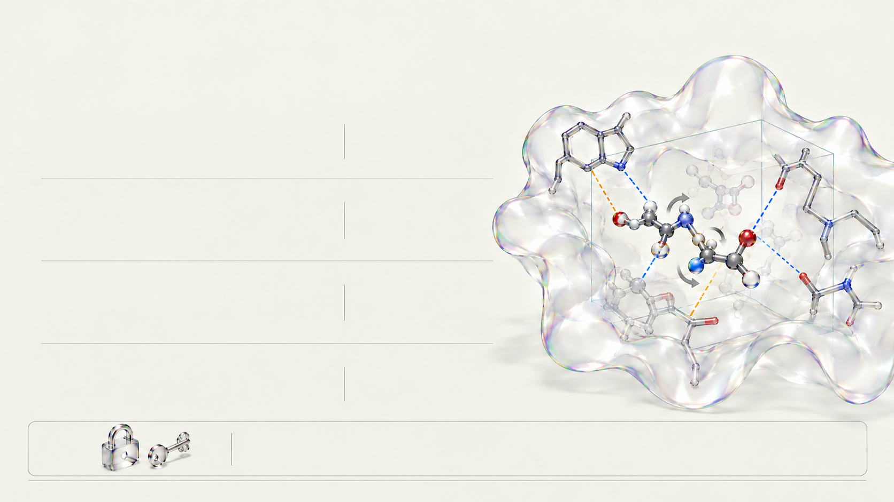

3D 포켓 내 결합 자세 탐색
AutoDock Vina 1.2.7
단백질 활성 포켓 3D 상자 안에서 후보 분자의 위치·방향과 단일 결합 회전(Torsion)을 몬테카를로 및 국소 최적화로 탐색합니다.
Monte Carlo + 국소 최적화

CRISTA · STEP 03 · 3D MOLECULAR DOCKING
단백질 포켓 내 최적 결합 자세와 도킹 점수를 구하고 아미노산 결합을 확인합니다.
AutoDock Vina 1.2.7
단백질 활성 포켓 3D 상자 안에서 후보 분자의 위치·방향과 단일 결합 회전(Torsion)을 몬테카를로 및 국소 최적화로 탐색합니다.
Monte Carlo + 국소 최적화
AutoDock Vina 1.2.7 (점수 함수)
물리·경험적 점수 함수로 결합 친화도를 kcal/mol 단위로 추정하며, 음수 절댓값이 클수록 포켓 안에서 더 안정된 결합 자세를 뜻합니다.
예: -10.5 kcal/mol
열역학 원리 · 2.1 10배 계단 (§5.6)
열역학 식(ΔG = RT ln K_d)상 상온에서 ΔG가 -1.36 kcal/mol 낮아질 때 이론적 해리 상수가 10배씩 감소하는 원리를 익힙니다.
ΔG = RT ln K_d
PLIP
도킹된 3D 좌표에서 아미노산 잔기(TRP86, SER203 등)와의 거리를 재어 수소 결합, 소수성 상호작용, π-스태킹, 염다리를 분석합니다.
TRP86 · SER203 잔기
Vina 도킹 점수는 실측 ΔG가 아닌 결합 친화도 추정치이므로, 점수 차이만으로 실제 생체 약효 배수를 단정할 수 없습니다.